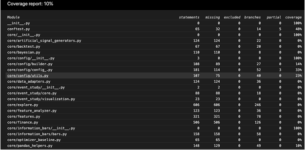
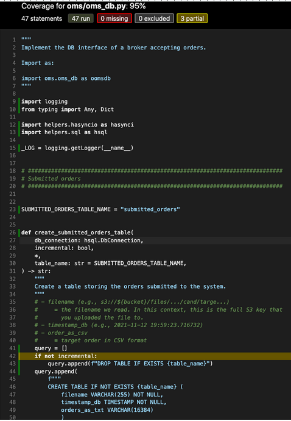

All.run unit tests.how to guide
Run Unit Tests#
Run Unit Tests#
- We use
pytestandunittestas testing framework - Before any PR (and ideally after a few commits), we want to run all the unit tests to make sure we didn't introduce any new bugs
Test Lists#
- We have different test set lists:
fast- Tests that are quick to execute (typically less than 5 secs per test class)
- We want to run these tests before/after every commit/PR to make sure things are not broken
slow- Tests that we don't want to run all the times because they are:
- Slow (typically less than 20 seconds per test)
- They are related to pieces of code that don't change often
- E.g., external APIs we don't want to hit continuously
- Tests that we don't want to run all the times because they are:
superslow- Tests that run long workload, e.g., running a production model, a long simulation
- No time limit but we need to be judicious with length
- Anything above 5-15 mins is problematic
Using Invoke#
invokeis a task execution framework which allows to execute some typical workflows in a simple way- In our config script
invokeis aliased toito reduce typing -
E.g., we use it to run the test suites:
# Run only fast tests. > i run_fast_tests # Run only slow tests. > i run_slow_tests # Run only superslow tests. > i run_superslow_tests -
To see the options use
--helpoption, e.g.i --help run_fast_tests:Usage: inv[oke] [--core-opts] run_fast_tests [--options] [other tasks here ...] Docstring: Run fast tests. :param stage: select a specific stage for the Docker image :param pytest_opts: option for pytest :param skip_submodules: ignore all the dir inside a submodule :param coverage: enable coverage computation :param collect_only: do not run tests but show what will be executed :param tee_to_file: save output of pytest in `tmp.pytest.log` :param kwargs: kwargs for `ctx.run` Options: -c, --coverage -k, --skip-submodules -o, --collect-only -p STRING, --pytest-opts=STRING -s STRING, --stage=STRING -t, --tee-to-file -v STRING, --version=STRING -
Docker image stage and version
-
To select a specific stage for Docker image use the
--stageoption. E.g., this might be useful when a user wants to run regressions on the local Docker image to verify that nothing is broken before promoting it todevimage.- To run the tests on the specific version of a Docker image, use the> i run_fast_tests --stage local--versionoption. - E.g., this might be useful when releasing a new version of an image.> i run_fast_tests --stage local --version 1.0.4
-
-
Specifying
pytestoptions- With the option
--pytest-optsit is possible to pass anypytestoption toinvoke.
- With the option
-
Running in debug mode
- If a user wants to run the tests in debug mode to show the output
> i run_fast_tests -s --dbg - This is equivalent to specifying
-v DEBUGthrough the command line of one of the executables
- If a user wants to run the tests in debug mode to show the output
-
Save test output to a file
- To save the output of
pytesttotmp.pytest.loguse the--tee-to-fileoption.> i run_fast_tests --tee-to-file
- To save the output of
-
Show the tests but do not run
- To list, but not run, the tests that will be executed, use
--collect-only.> i run_fast_tests --collect-only
- To list, but not run, the tests that will be executed, use
-
Skip submodules
- To skip running tests in submodules, use the
--skip-submodulesoption. - This option is useful in repos with Git submodules so that you can run only
the tests specific to the repo, skipping the tests in the submodule
- E.g., to run only the tests in
cmampbut not inhelpers(which is a submodule)> cd cmamp1 > i run_fast_tests --skip-submodules
- E.g., to run only the tests in
- To skip running tests in submodules, use the
-
Compute test coverage
-
Use the
--coverageoption> i run_fast_tests --coverage
-
Timeout#
- We use the
pytest-timeoutpackage to limit durations of fast, slow, and superslow tests - The timeout restricts the running time of the test methods, including
set_up_test()andtear_down_test()time, if they are run at the beginning/end of the methods
Rerunning Timed Out Tests#
- Running tests can take different amounts of time depending on workload and machine
- Because of this, we rerun failing tests using
pytest-rerunfailures pytest-rerunfailuresis not completely compatible withpytest-timeout. This is why we have to add the-o timeout_func_only=trueflag topytest-timeout. See https://github.com/pytest-dev/pytest-rerunfailures/issues/99 for more information- We rerun time outed fast tests twice and time outed slow and superslow tests once
- There is a way to provide a rerun delay for individual tests. However, we can't use it for now due to #693 (comment)
Compute Test Coverage#
-
The documentation for the Python package
coverageis here. -
Run a set of unit tests enabling coverage:
# Run the coverage for a single test: > i run_fast_tests --coverage -p oms/test/test_broker.py::TestSimulatedBroker1 # Run coverage for an entire module like `oms`: > i run_fast_tests --coverage -p oms -
This generates and runs a pytest command inside Docker like:
docker> pytest -m "not slow and not superslow" oms/test/test_broker.py::TestSimulatedBroker1 --cov=. --cov-branch --cov-report term-missing --cov-report htmlwhich generates: - A binary
.coveragefile that contains the coverage information - A default coverage report - Anhtmlcovdirectory with a browsable HTML coverage report -
You can post-process the coverage report in different ways using the command
coverageinside a docker container, since the code was run (as always) inside the Docker container that contains all the dependencies> coverage -h Coverage.py, version 5.5 with C extension Measure, collect, and report on code coverage in Python programs. usage: `coverage <command>` [options] [args] Commands: annotate Annotate source files with execution information. combine Combine a number of data files. debug Display information about the internals of coverage.py erase Erase previously collected coverage data. help Get help on using coverage.py. html Create an HTML report. json Create a JSON report of coverage results. report Report coverage stats on modules. run Run a Python program and measure code execution. xml Create an XML report of coverage results. Use `coverage help <command>` for detailed help on any command. Full documentation is at https://coverage.readthedocs.io> coverage report -h Usage: coverage report [options] [modules] Report coverage statistics on modules. Options: --contexts=REGEX1,REGEX2,... Only display data from lines covered in the given contexts. Accepts Python regexes, which must be quoted. --fail-under=MIN Exit with a status of 2 if the total coverage is less than MIN. -i, --ignore-errors Ignore errors while reading source files. --include=PAT1,PAT2,... Include only files whose paths match one of these patterns. Accepts shell-style wildcards, which must be quoted. --omit=PAT1,PAT2,... Omit files whose paths match one of these patterns. Accepts shell-style wildcards, which must be quoted. --precision=N Number of digits after the decimal point to display for reported coverage percentages. --sort=COLUMN Sort the report by the named column: name, stmts, miss, branch, brpart, or cover. Default is name. -m, --show-missing Show line numbers of statements in each module that weren't executed. --skip-covered Skip files with 100% coverage. --no-skip-covered Disable --skip-covered. --skip-empty Skip files with no code. --debug=OPTS Debug options, separated by commas. [env: COVERAGE_DEBUG] -h, --help Get help on this command. --rcfile=RCFILE Specify configuration file. By default '.coveragerc', 'setup.cfg', 'tox.ini', and 'pyproject.toml' are tried. [env: COVERAGE_RCFILE] -
Report the coverage for all the files under
omsusing the workload above (i.e., the fast tests underoms/test/test_broker.py::TestSimulatedBroker1)> i docker_bash docker> coverage report --include="oms/*" Name Stmts Miss Branch BrPart Cover ------------------------------------------------------------------------- oms/__init__.py 0 0 0 0 100% oms/api.py 154 47 36 2 70% oms/broker.py 200 31 50 9 81% oms/broker_example.py 23 0 4 1 96% oms/call_optimizer.py 31 0 0 0 100% oms/devops/__init__.py 0 0 0 0 100% oms/devops/docker_scripts/__init__.py 0 0 0 0 100% oms/locates.py 7 7 2 0 0% oms/mr_market.py 55 1 10 1 97% oms/oms_db.py 47 0 10 3 95% oms/oms_lib_tasks.py 64 39 2 0 38% oms/oms_utils.py 34 34 6 0 0% oms/order.py 101 30 22 0 64% oms/order_example.py 26 0 0 0 100% oms/place_orders.py 121 8 18 6 90% oms/pnl_simulator.py 326 42 68 8 83% oms/portfolio.py 309 21 22 0 92% oms/portfolio_example.py 32 0 0 0 100% oms/tasks.py 3 3 0 0 0% oms/test/oms_db_helper.py 29 11 2 0 65% oms/test/test_api.py 132 25 12 0 83% oms/test/test_broker.py 33 5 4 0 86% oms/test/test_mocked_portfolio.py 0 0 0 0 100% oms/test/test_mr_market.py 46 0 2 0 100% oms/test/test_oms_db.py 114 75 14 0 38% oms/test/test_order.py 24 0 4 0 100% oms/test/test_place_orders.py 77 0 4 0 100% oms/test/test_pnl_simulator.py 235 6 16 0 98% oms/test/test_portfolio.py 135 0 6 0 100% ------------------------------------------------------------------------- TOTAL 2358 385 314 30 82% -
To exclude the test files, which could inflate the coverage
> coverage report --include="oms/*" --omit="*/test_*.py" Name Stmts Miss Branch BrPart Cover ------------------------------------------------------------------------- oms/__init__.py 0 0 0 0 100% oms/api.py 154 47 36 2 70% oms/broker.py 200 31 50 9 81% oms/broker_example.py 23 0 4 1 96% oms/call_optimizer.py 31 0 0 0 100% oms/devops/__init__.py 0 0 0 0 100% oms/devops/docker_scripts/__init__.py 0 0 0 0 100% oms/locates.py 7 7 2 0 0% oms/mr_market.py 55 1 10 1 97% oms/oms_db.py 47 0 10 3 95% oms/oms_lib_tasks.py 64 39 2 0 38% oms/oms_utils.py 34 34 6 0 0% oms/order.py 101 30 22 0 64% oms/order_example.py 26 0 0 0 100% oms/place_orders.py 121 8 18 6 90% oms/pnl_simulator.py 326 42 68 8 83% oms/portfolio.py 309 21 22 0 92% oms/portfolio_example.py 32 0 0 0 100% oms/tasks.py 3 3 0 0 0% oms/test/oms_db_helper.py 29 11 2 0 65% ------------------------------------------------------------------------- TOTAL 1562 274 252 30 80% -
To open the line coverage from outside Docker, go with your browser to
/htmlcov/index.html -
The
htmlcovis re-written with every coverage run with the--cov-report htmloption- If you move out
index.htmlfromhtmlcovdir some html features (e.g., filtering) will not work.
# On macOS: > open htmlcov/index.html
- If you move out
-
By clicking on a file you can see which lines are not covered

An Example Coverage Session#
-
You want to measure the unit test coverage of
omscomponent from bothfastandslowtest suites -
Start by running the fast tests for the
omsdir> i run_fast_tests --coverage -p oms collected 66 items / 7 deselected / 59 selected ... -
Compute the coverage for the module sorting by coverage
docker> coverage report --include="oms/*" --omit="*/test_*.py" --sort=cover Name Stmts Miss Branch BrPart Cover ------------------------------------------------------------------------- oms/locates.py 7 7 2 0 0% oms/oms_utils.py 34 34 6 0 0% oms/tasks.py 3 3 0 0 0% oms/oms_lib_tasks.py 64 39 2 0 38% oms/order.py 101 30 22 0 64% oms/test/oms_db_helper.py 29 11 2 0 65% oms/api.py 154 47 36 2 70% oms/broker.py 200 31 50 9 81% oms/pnl_simulator.py 326 42 68 8 83% oms/place_orders.py 121 8 18 6 90% oms/portfolio.py 309 21 22 0 92% oms/oms_db.py 47 0 10 3 95% oms/broker_example.py 23 0 4 1 96% oms/mr_market.py 55 1 10 1 97% oms/__init__.py 0 0 0 0 100% oms/call_optimizer.py 31 0 0 0 100% oms/devops/__init__.py 0 0 0 0 100% oms/devops/docker_scripts/__init__.py 0 0 0 0 100% oms/order_example.py 26 0 0 0 100% oms/portfolio_example.py 32 0 0 0 100% ------------------------------------------------------------------------- TOTAL 1562 274 252 30 80% -
You see that some files have low coverage, so you want to see what exactly is not covered
-
Generate the same report in a browsable format:
- The low coverage fordocker> rm -rf htmlcov; coverage html --include="oms/*" --omit="*/test_*.py" # Wrote HTML report to `htmlcov/index.html` > open htmlcov/index.htmltasks.pyandoms_lib_tasks.pyis due to the fact that we are running code through invoke that doesn't allowcoverageto track it -
Now, we run the coverage for the slow tests
# Save the coverage from the fast tests run > cp .coverage .coverage_fast_tests > i run_slow_tests --coverage -p oms collected 66 items / 59 deselected / 7 selected > cp .coverage .coverage_slow_tests > coverage report --include="oms/*" --omit="*/test_*.py" --sort=Cover Name Stmts Miss Branch BrPart Cover ------------------------------------------------------------------------- oms/locates.py 7 7 2 0 0% oms/oms_utils.py 34 34 6 0 0% oms/tasks.py 3 3 0 0 0% oms/pnl_simulator.py 326 280 68 1 13% oms/place_orders.py 121 100 18 0 15% oms/mr_market.py 55 44 10 0 17% oms/portfolio.py 309 256 22 0 18% oms/call_optimizer.py 31 25 0 0 19% oms/broker.py 200 159 50 0 20% oms/order.py 101 78 22 0 20% oms/order_example.py 26 19 0 0 27% oms/broker_example.py 23 14 4 0 33% oms/portfolio_example.py 32 21 0 0 34% oms/api.py 154 107 36 0 36% oms/oms_lib_tasks.py 64 39 2 0 38% oms/oms_db.py 47 5 10 2 84% oms/__init__.py 0 0 0 0 100% oms/devops/__init__.py 0 0 0 0 100% oms/devops/docker_scripts/__init__.py 0 0 0 0 100% oms/test/oms_db_helper.py 29 0 2 0 100% ------------------------------------------------------------------------- TOTAL 1562 1191 252 3 23% -
We see that the coverage from the slow tests is only 23% for 7 tests
docker> coverage combine .coverage_fast_tests .coverage_slow_tests Combined data file .coverage_fast_tests Combined data file .coverage_slow_tests
An Example with Customized Pytest-Cov Html Run#
-
You want to measure unit test coverage specifically for one test in
datapull/common/data/transform/and to save generatedhtmlcovin the same directory. -
Run the command in the container:
> i docket_bash docker> pytest --cov-report term-missing --cov=datapull/common/data/transform/ datapull/common/data/transform/test/test_transform_utils.py --cov-report html:datapull/common/data/transform/htmlcov ... ---------- coverage: platform linux, python 3.8.10-final-0 ----------- Name Stmts Miss Cover Missing ----------------------------------------------------------------------------------------------- datapull/common/data/transform/convert_csv_to_pq.py 55 55 0% 2-159 datapull/common/data/transform/extract_data_from_db.py 55 55 0% 2-125 datapull/common/data/transform/pq_convert.py 126 126 0% 3-248 datapull/common/data/transform/transform_pq_by_date_to_by_asset.py 131 131 0% 2-437 datapull/common/data/transform/transform_utils.py 22 0 100% ----------------------------------------------------------------------------------------------- TOTAL 389 367 6% Coverage HTML written to dir datapull/common/data/transform/htmlcov
Generate Coverage Report with Invoke#
-
You can compute test coverage for a specified directory and generate text and HTML reports automatically using
invoke task run_coverage_report> i --help run_coverage_report INFO: > cmd='/data/grisha/src/venv/amp.client_venv/bin/invoke --help run_coverage_report' Usage: inv[oke] [--core-opts] run_coverage_report [--options] [other tasks here ...] Docstring: Compute test coverage stats. :param target_dir: directory to compute coverage stats for running-unit-tests :param generate_html_report: whether to generate HTML coverage report or not :param publish_html_on_s3: whether to publish HTML coverage report or not :param aws_profile: the AWS profile to use for publishing HTML report Options: -a STRING, --aws-profile=STRING -g, --[no-]generate-html-report -p, --[no-]publish-html-on-s3 -t STRING, --target-dir=STRING -
Compute coverage for
market_datadir, generate text and HTML reports and publish HTML report on S3> i run_coverage_report --target-dir market_data ... Name Stmts Miss Branch BrPart Cover ------------------------------------------------------------------------ market_data/real_time_market_data.py 100 81 32 0 16% market_data/replayed_market_data.py 111 88 24 0 19% market_data/abstract_market_data.py 177 141 24 0 19% market_data/market_data_example.py 124 97 10 0 20% market_data/market_data_im_client.py 66 50 18 0 21% market_data/__init__.py 5 0 0 0 100% ------------------------------------------------------------------------ TOTAL 583 457 108 0 19% Wrote HTML report to htmlcov/index.html 20:08:53 - INFO lib_tasks.py _publish_html_coverage_report_on_s3:3679 HTML coverage report is published on S3: path=`s3://cryptokaizen-html/html_coverage/grisha_CmTask1038_Tool_to_extract_the_dependency_from_a_project`
Publishing HTML Report on S3#
- To make a dir with the report unique, you decorate the dir with a linux user
and a Git branch name, e.g.,
html_coverage/grisha_CmTask1038_Tool_to_extract_the_dependency_from_a_projecthtml_coverageis the common dir on S3 for coverage reports
- After publishing the report, you can open the report via a local web browser
Running Pytest Directly#
Basic Rules#
- Always run
pytestfrom the Docker container to ensure consistency in our environments> i docker_bash # Then from Docker, run pytest. docker > pytest <test_file_name>
Usage and Invocations Reference#
- See
pytestdocumentation -
Some examples of useful command lines:
# Stop at first failure > pytest -x # Run a single test class > pytest -k TestPcaFactorComputer1 # Run a single test method > pytest core/test/test_core.py::TestPcaFactorComputer1::test_linearize_eigval_eigvec # Run all tests in a file > pytest core/test/test_core.py # Remove cache artifacts > find . -name "__pycache__" -o -name ".pytest_cache" ./.pytest_cache ./dev_scripts/test/Test_linter_py1.test_linter1/tmp.scratch/__pycache__ ./dev_scripts/test/__pycache__ ./dev_scripts/__pycache__ > find . -name "__pycache__" -o -name ".pytest_cache" | xargs rm -rf # Run with a clear cache > pytest --cache-clear # Run the tests that last failed (this data is stored in .pytest_cache/v/cache/lastfailed) > pytest --last-failed
Custom Pytest Options Behaviors#
-
Enable logging
-
To enable logging of
_LOG.debugfor a single test run:# Enable debug info > pytest oms/test/test_broker.py::TestSimulatedBroker1 -s --dbg
-
-
Update golden outcomes
-
This switch allows to overwrite the golden outcomes that are used as reference in the unit tests to detect failures
> pytest --update_outcomes
-
-
Incremental test mode
- This switch allows to reuse artifacts in the test directory and to skip the clean up phase
-
It is used to rerun tests from the middle when they are very long and one wants to debug them
> pytest --incremental
Debugging Notebooks#
- Run a failing test with
-s --dbgto get detailed logs - E.g.,
> pytest core/plotting/test/test_gallery_notebook.py -s --dbg - From the logs take a
run_notebook.pyscript command that was run by the test - E.g., starting like
/app/dev_scripts/notebooks/run_notebook.py --notebook ... - Append
--no_suppress_outputto this command and run it again directly from the bash - E.g., like
> /app/dev_scripts/notebooks/run_notebook.py --notebook ... --no_suppress_output - Scroll up the logs and see a report about the problem, notebooks failures will be displayed as well
- E.g.,
Running Tests on GH Actions#
- The official documentation is https://docs.github.com/en/actions
How to Run a Single Test on GH Action#
-
Unfortunately, there is no way to log in and run interactively on GH machines. This is a feature requested but not implemented by GH yet.
-
All the code to run GH Actions is in the
.githubdirectory inlemonadeandamp. -
E.g., to run a single test in the fast test target, instead of the entire regression suite
-
You can modify
.github/workflows/fast_tests.yml, by replacing- Note that the indentation matters since it's a YAML file# run: invoke run_fast_tests run: invoke run_fast_tests --pytest-opts="helpers/test/test_git.py::Test_git_modified_files1::test_get_modified_files_in_branch1 -s --dbg"<img src="../../code_guidelines/figs/unit_tests/image_3.png">- The
-s --dbgis to show_LOG.debugin case you care about that to get more information- Commit the code to your branch (not in master, please) since GH runs tests independently per branch
- Kick-off manually the fast test through the GH interface
- After debugging, you can revert the change from your branch to
masterand move along with the usual PR flow
- The
-